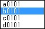

選択されている矩形座標の取得 WtmGetGridRect
BOOL WtmGetGridRect( HWND aWnd , RECT aRect,LPRECTaGridRect );
選択されている矩形座標を取得します。

この関数をコールする前に、WtmProcessMonitor、またはWtmWindowMonitorで描画の監視を開始しておく必要があります。
引 数
| aWnd | 描画監視中のウインドウ |
| aGridRect | 選択されている矩形(ウインドウ左隅からの相対位置) |
戻り値
| BOOL |
|